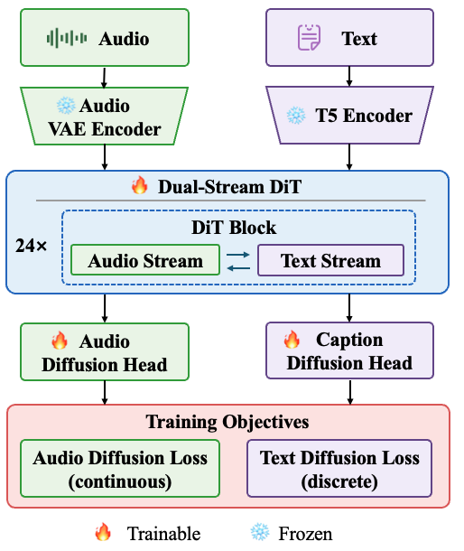

Project Overview
Overview
Project Overview
Overview
UAT unifies audio generation and understanding in a single diffusion framework. It couples continuous latent diffusion for acoustic synthesis with masked discrete diffusion for text prediction, enabling bidirectional audio-text modeling without relying on autoregressive audio tokens.

Audio Generation
Text prompts are rendered into audio through continuous latent diffusion.
Audio Editing
Existing audio can be modified according to text instructions within the same model family.
Audio Captioning
A lightweight text stream enables non-autoregressive text generation from audio.
Demo Section 1
Audio Generation
Demo Section 1
Audio Generation
Side-by-side text-to-audio outputs for the same prompts. The examples below compare UAT with reference audio and representative unified audio-text baselines.
Demo Section 2
Audio Editing
Demo Section 2
Audio Editing
Audio editing examples will be added here with the same paper-demo layout.
Editing samples pending
This section is reserved for source audio, editing instruction, and edited outputs. It can be populated directly once the editing samples are provided.